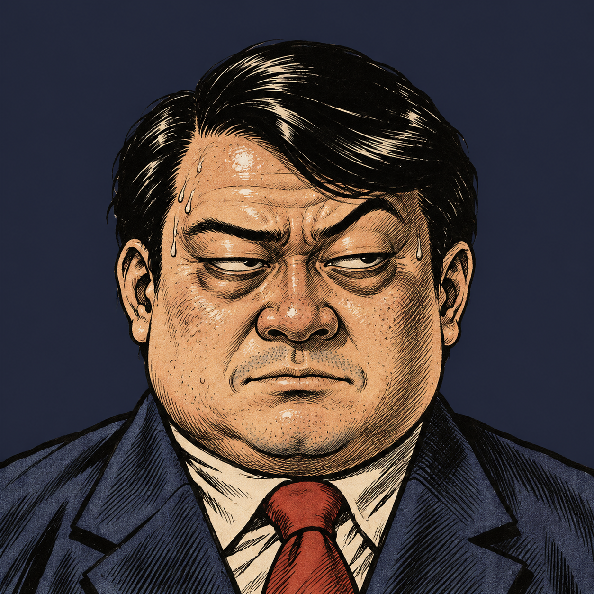
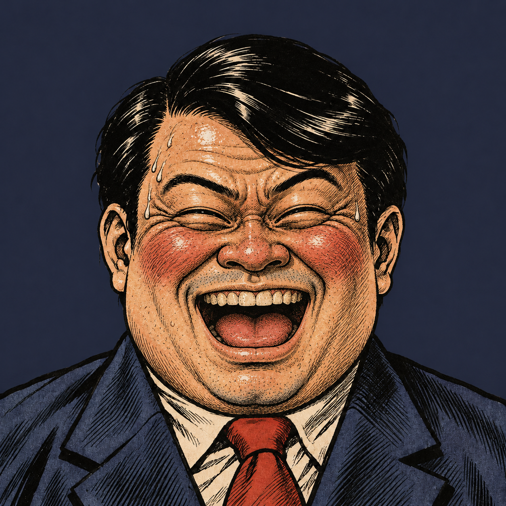

勝ったら出世が遠のく。
ルール
負け上司の機嫌が上がる。でも負け続けると「わざと？」と疑われる
あいこいい勝負に見えて、疑いが晴れる
勝ち疑いは消えるが、機嫌が大きく下がる
突破5回勝負して、機嫌70以上なら昇進
人事部より 申し送り

癖
前回と同じ手を、つい続けて出しがち
性格
単純でノリがいい
目標
5回勝負して、機嫌70以上。疑いが100になったら即アウト
係長 田中
1 / 5 回戦
機嫌（目標70）50
疑い（100でアウト）0
よーし、いくぞ！
✊
VS
✊
最初はグー、じゃんけん…
申し送り：前回と同じ手を、つい続けて出しがち
あなた 殿
主任に任ずる
係長田中への接待における、見事な負けっぷりを評価する。
昭和六十三年 11月7日
株式会社 接待商事 人事部
人事
負け 0回 ／ あいこ 0回 ／ 勝ち 0回

君の負けっぷりは、実に見事だった。